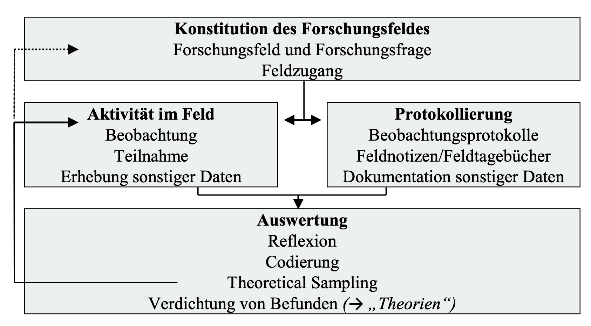
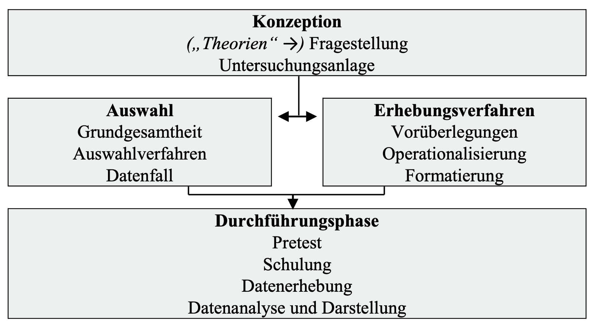
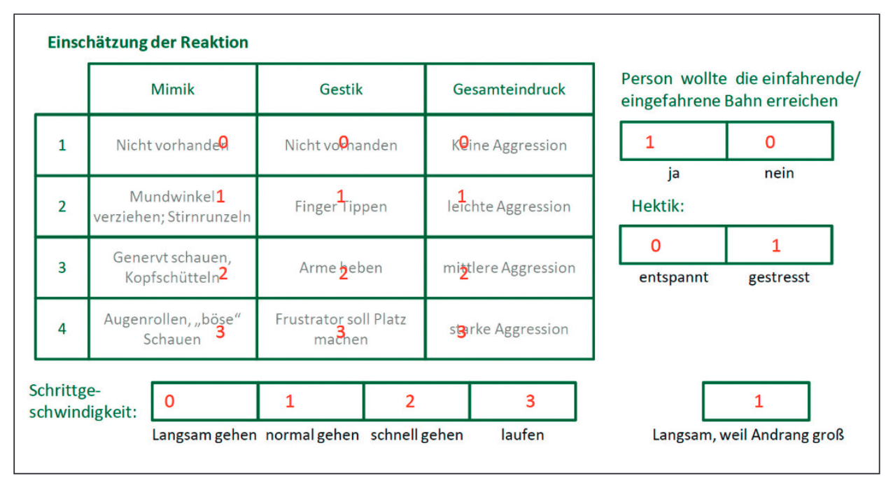

Dr. Christof Nägele · Uni Basel & PH FHNW
Beobachten und Fragen stellen gehören zu den alltäglichsten Formen der Informationsgewinnung. Gerade deshalb entsteht leicht der Eindruck, dass Beobachtungen und Interviews unkomplizierte Methoden sind, die schnell zu validen Erkenntnissen führen. Wissenschaftliche Beobachtung und wissenschaftliche Interviews unterscheiden sich jedoch grundlegend von Alltagspraktiken: Sie sind systematisch, theoriegeleitet, transparent und reflektiert.
Der Blockkurs geht der Frage nach, wie Beobachtungen und Interviews so geplant und durchgeführt werden können, dass sie als wissenschaftliche Methoden belastbare Daten liefern – und wann welche Methode für eine gegebene Forschungsfrage geeignet ist.
Beobachtung
Führen Sie aktuell eine Beobachtungsstudie durch oder planen Sie eine Beobachtungsstudie?
- Falls ja: Was ist die Forschungsfrage und Ihr (geplantes) Vorgehen?
- Falls nein: Was wäre aus Ihrer Sicht eine spannende Forschungsfrage, die mittels einer Beobachtungsstudie durchgeführt werden könnte?
Interview
Überlegen Sie sich Fragen und einen Ablauf für ein Interview. Es ist ein Interview zu Lebens- und Karriereverläufen. Die interessierende Zielgruppe sind Studierende an der Uni Basel in einem Studiengang am IBW. Wie waren deren Wege ins Studium?
Interview 1972: Brandt zu Währungspolitik nach Konsultation mit Pompidou.
Two priests, a Dominican and a Jesuit, are discussing whether it is a sin to smoke and pray at the same time. After failing to reach a conclusion, each goes off to consult his respective superior.
The next day they meet again.
The Dominican says, “Well, what did your superior say?”
The Jesuit responds, “He said it was all right.”
“That’s funny,”the Dominican replies. “My superior said it was a sin.”
The Jesuit says, „What did you ask him?“
The Dominican replies, „I asked him if it was right to smoke while praying.“
„Oh,“ says the Jesuit. „I asked my superior if it was all right to pray while smoking.“
Bradburn, N. M., Sudman, S., & Wansink, B. (2004). Asking questions. The definitive guide to questionnaire design for market research, political polls, and social and health questionnaires, revised edition. John Wiley & Sons, Inc.
Beobachtung als wissenschaftliche Methode erfordert Entscheidungen über ihren Gegenstand, ihre Strukturierung und ihre Dokumentation. Sie kann offen oder strukturiert, teilnehmend oder nicht-teilnehmend, verdeckt oder offen erfolgen. Entscheidend ist, dass Beobachtungen nicht „einfach stattfinden“, sondern gezielt geplant und systematisch durchgeführt werden.
Learning in clinical settings occurs through engagement in everyday activities and interactions. Yet, clinical settings are complex, dynamic environments and data collection methods such as interviews and focus groups, although valuable, alone may not capture the complexities of these settings.
Noble, C., Ajjawi, R., Billett, S., & Goldszmidt, M. (2025). How to approach qualitative observational research in workplace learning. The Clinical Teacher, 22(1), e70005. https://doi.org/10.1111/tct.70005
Health care practitioners learn through experience in clinical environments in which supervision is a key component, but how that learning occurs outside the supervision relationship remains largely unknown.
This study explores the environmental factors that inform and support workplace learning within a clinical environment.
Sheehan, D., Jowsey, T., Parwaiz, M., Birch, M., Seaton, P., Shaw, S., Duggan, A., & Wilkinson, T. (2017). Clinical learning environments: Place, artefacts and rhythm. Medical Education, 51(10), 1049–1060. https://doi.org/10.1111/medu.13390
METHODS An observational study drawing on ethnographic methods was undertaken in a general medicine ward. Observers paid attention to interactions among staff members that involved potential teaching and learning moments that occurred and were visible in the course of routine work. General purpose thematic analysis of field notes was undertaken.
The merits of informal learning have been widely reported and embraced by medical educators. However, research has yet to describe in detail the extent to which informal intraprofessional or informal interprofessional education is part of graduate medical education (GME), and the nature of those informal education experiences.
This study seeks to describe: (i) who delivers informal education to residents; (ii) how often they do so; (iii) the content they share; and (iv) the teaching techniques they use.
Varpio, L., Bidlake, E., Casimiro, L., Hall, P., Kuziemsky, C., Brajtman, S., & Humphrey-Murto, S. (2014). Resident experiences of informal education: How often, from whom, about what and how. Medical Education, 48(12), 1220–1234. (25413915). https://doi.org/10.1111/medu.12549
METHODS This study describes instances of informal learning in GME captured through non-participant observations in two contexts: a palliative care hospice and a paediatric hospital. Analysis of 60 hours of observation data involved a process of collaborative team consensus to: (i) identify instances of informal intraprofessional and informal interprofessional education, and (ii) categorise these instances by CanMEDS Role and teaching technique.
Döring, N. (2023). Beobachtung. In N. Döring, Forschungsmethoden und Evaluation in den Sozial- und Humanwissenschaften (pp. 323–352).


Rules for Quasi-Naturalistic Family Observation Sessions
Heyman, R. E., Lorber, M. F., Eddy, J. M., & West, T. V. (2014). Behavioral observation and coding. In H. T. Reis & C. M. Judd (Eds.), Handbook of research methods in social and personality psychology (pp. 345–372). Cambridge University Press.
Heyman, R. E., Lorber, M. F., Eddy, J. M., & West, T. V. (2014). Behavioral observation and coding. In H. T. Reis & C. M. Judd (Eds.), Handbook of research methods in social and personality psychology (pp. 345–372). Cambridge University Press.
Im Rahmen eines Forschungspraktikums wurde im Sommersemester 2009 an der LMU München die Durchsetzung sozialer Normen im Alltag untersucht. Als Beispiel und Fokus der Untersuchung diente die in Deutschland auf Rolltreppen geltende Norm „Links gehen, rechts stehen“. Die Studie wurde inklusive ihrer Ergebnisse 2013 publiziert (Wolbring et al. 2013). In einem Feldexperiment mit einem faktoriellen Design (Eifler/Leitgöb, Kapitel 13 in diesem Band) wurden Passanten durch Teilnehmende des Praktikums gezielt am Gehen auf der Rolltreppe gehindert. Ziel war es die Reaktion (Sanktionswahrscheinlichkeit, Sanktionsstärke und Eintrittsdauer bis zur Sanktion) auf die Normverletzung zu beobachten. Gleichzeitig wurden Symbole des sozialen Status (Geschlecht und Kleidungsstil) der normverletzenden Mitarbeiter systematisch variiert, mit dem Ziel, Effekte des sozialen Status auf die Normdurchsetzung ermitteln zu können.
Thierbach, C., & Petschick, G. (2022). Beobachtung. In N. Baur & J. Blasius (Eds), Handbuch Methoden der empirischen Sozialforschung (pp. 1563–1579). Springer Fachmedien. https://doi.org/10.1007/978-3-658-37985-8_109

Thierbach, C., & Petschick, G. (2022). Beobachtung. In N. Baur & J. Blasius (Eds), Handbuch Methoden der empirischen Sozialforschung (pp. 1563–1579). Springer Fachmedien. https://doi.org/10.1007/978-3-658-37985-8_109
Wenn die Beobachterübereinstimmung („observer agreement“, „inter-observer reliability“) bei allen Kategorien hoch ist, wird dies als Hinweis darauf gedeutet, dass das Beobachtungssystem insgesamt problemlos auf die zu beobachtenden Fälle anwendbar ist und zu messgenauen Daten führt.
Geringe Beobachterübereinstimmung deutet darauf hin, dass das Beobachtungssystem unklar bzw. messungenau ist und hinsichtlich einzelner Kategorien überarbeitet werden muss und/oder dass mindestens ein Beobachter verzerrte Beurteilungen abgibt.
Döring, N. (2023). Beobachtung. In N. Döring, Forschungsmethoden und Evaluation in den Sozial- und Humanwissenschaften (pp. 323–352).
Planung
Durchführung
Ein wissenschaftliches Interview („research interview“/„scientific interview“) ist die zielgerichtete, systematische und regelgeleitete Generierung und Erfassung von verbalen Äusserungen einer Befragungsperson (Einzelbefragung) oder mehrerer Befragungspersonen (Paar-, Gruppenbefragung) zu ausgewählten Aspekten ihres Wissens, Erlebens oder Verhaltens in mündlicher Form.
Döring, N. (2023). Beobachtung. In N. Döring, Forschungsmethoden und Evaluation in den Sozial- und Humanwissenschaften (pp. 323–352).
|
Interviewform (Grad der Strukturierung) |
Interviewinstrument (Grad der Standardisierung) |
Interviewfragen (Offenheit/Geschlossenheit) |
|---|---|---|
| Unstrukturiertes Interview = nicht-strukturiertes Interview | Kein Instrument |
Offene Fragen: Erinnern Sie sich an den Tag, als Sie die Diagnose bekommen haben? Wie ist das damals gewesen, und wie sind die folgenden Tage verlaufen? |
| Halbstrukturiertes Interview = teilstrukturiertes Interview | Halbstandardisiertes = teilstandardisiertes Instrument: Interview-Leitfaden |
Offene Fragen:
Welche Symptome hatten Sie? |
| Vollstrukturiertes Interview = strukturiertes Interview | Vollstandardisiertes = standardisiertes Instrument: Interview-Fragebogen |
Geschlossene Fragen/Aussagen mit Antwortvorgaben:
Nehmen Sie momentan Medikamente ein?
Bewerten Sie Ihren aktuellen Gesundheitszustand auf einer Schulnotenskala! |
Döring, N. (2023). Beobachtung. In N. Döring, Forschungsmethoden und Evaluation in den Sozial- und Humanwissenschaften (pp. 323–352).
Döring, N., & Bortz, J. (2016). Datenerhebung. In N. Döring & J. Bortz, Forschungsmethoden und Evaluation in den Sozial- und Humanwissenschaften (pp. 321–577). Springer-Verlag.
| Gut | So nicht |
|---|---|
| textgenerierende Fragen, z. B. «Beschreiben Sie doch mal…» |
geschlossene Fragen: „Waren Sie damit zufrieden oder unzufrieden?“ Besser: … |
| aufrechterhaltende Fragen, z. B. «Fällt Ihnen sonst noch was hierzu ein?»; «Wie ging es weiter?» |
Ja-Nein-Fragen: «Haben Sie die Stelle dann angenommen?» Besser: … |
| prozessorientierte Fragen: «Wie kam es eigentlich, dass … ?» |
Begründungen abfragen: «Warum haben Sie das gemacht?» Besser: … |
|
offene Fragen: dabei die eigenen Konzepte in der Frage reflektieren! provokative Fragen: wenn überhaupt nur sparsam, gezielt und überlegt einsetzen, erst gegen Ende oder bei stockender Interviewdynamik |
suggestive und wertende Fragen, z. B.: «Sie sind ja in der Türkei eher traditionell aufgewachsen?» Besser: … |
| kurze, verständliche Fragen | komplizierte Fragen, Fragereihungen |
| beantwortbare Fragen! |
Fragen, die die Kenntnis des/der Befragten übersteigen, z. B. «Was hat Ihr Chef darüber gedacht?» Hauptforschungsfrage direkt und abstrakt stellen, z. B.: «Welches Vaterschaftskonzept haben Sie?» |
|
«weiche» Fragen, z. B.: «Erzählen Sie mir doch bitte mal, welche Erfahrungen Sie so mit Einkaufen im Internet bisher gemacht haben.» Weichmacher: doch, mal, so, eigentlich Verben jedoch nicht in Konjunktivform! |
Fragen in Schriftsprache bzw. «wie aus der Pistole geschossen» |
| Faktenabfragen gehören ans Ende des Interviews | zu frühe Faktenfragen ruinieren den selbstläufigen Kommunikationsprozess |
| die Befragten haben soweit wie möglich monologisches Rederecht | häufige Unterbrechungen / Dominanz der interviewenden Person |
Dresing, T., & Pehl, T. (2018). Praxisbuch Interview, Transkription & Analyse: Anleitungen und Regelsysteme für qualitativ Forschende. Eigenverlag.
Fragen, die mit einem Fragewort beginnen, fördern das Erzählen, das Verstehen von Perspektiven und Einblicke in Erfahrungen.
Typische Fragewörter:
Wer? – Wer war daran beteiligt?
Was? – Was ist passiert?
Wann? – Wann haben Sie das erlebt?
Wo? – Wo fand das statt?
Wie? – Wie ist es dazu gekommen? / Wie sind Sie damit umgegangen?
Warum? – nur zurückhaltend einsetzen, da es häufig zu Rechtfertigungen führt; besser: „Wie kam es dazu?“ oder „Was waren die Gründe aus Ihrer Sicht?“
Ich lese einen Text vor.
Frau Meyer, die Sekretärin von Herrn Ragler, erschien heute morgen nicht im Büro. Herr Ragler wollte von Frau Meyers Freundin und Mitarbeiterin wissen, was los sei. Die Freundin erzählte, dass Frau Meyer sich schon gestern krank gefühlt hätte. Auf dem Schreibtisch von Frau Meyer lag ausserdem eine Zigarettenpackung auf der “Claus” geschrieben stand.
Wellhöfer, P. R. (2004). Schlüsselqaulifikation Sozialkompetenz. Lucius & Lucius Verlagsgesellschaft mbH.
| Aussage | Ja | Nein | Kann man nicht sagen |
|---|---|---|---|
| 1. Die Sekretärin Frau Meyer ist krank. | |||
| 2. Der Vorgesetzte von Frau Meyer heisst Herr Müller. | |||
| 3. Der Vorgesetzte fragte die Freundin von Frau Meyer. | |||
| 4. Auf dem Schreibtisch lag eine leere Zigarettenpackung. | |||
| 5. Der Vorgesetzte von Frau Meyer hat sich geärgert. | |||
| 6. Die Sekretärin hat sich schon vorgestern krank gefühlt. | |||
| 7. Der Freund der Sekretärin heisst Claus. | |||
Bewertende Aussagen können in vielen Kontexten nützlich sein, um Feedback zu geben, Präferenzen auszudrücken oder Entscheidungen zu treffen.
Aber nicht in Inteviews!
| Beobachtung / Fakt | Interpretation / Bewertung |
|---|---|
| Das Buch hat 300 Seiten. | Das Buch ist viel zu lang und langweilig. |
| Der Schüler hat die Arbeit vor dem vereinbarten Termin abgegeben. | Der Schüler hat die Arbeit zu früh abgegeben, er hat schludrig gearbeitet. |
| Heute ist es 35° warm. | Heute ist es unerträglich heiss. |
| … | … |
| Theoriebezug | Fragen | ||
|---|---|---|---|
| Fokusthema | Soziale Identität | (Stürmer & Siem, 2020) | |
| Oberthema | Gruppen | Entstehung und Funktion von Gruppen (Tajfel, 1981) | … |
| Unterthemen | Wichtige Gruppen | Jugendkulturen, Gruppen (Preite, 2018) | … |
| Identifikation mit einer Gruppe | Selbstkategorisierung (Köhler, 2016) | … | |
| … | Einfluss der Gruppen | … | … |
Planung
Durchführung
Interview Überlegen Sie sich Fragen und einen Ablauf für ein Interview. Es ist ein Interview zu Lebens- und Karriereverläufen. Die interessierende Zielgruppe sind Studierende an der Uni Basel in einem Studiengang am IBW. Wie waren deren Wege ins Studium?
Beobachtung Wie führen Studierende des IBW Interviews durch?
Im Interview bedeutet aktives Zuhören:
- nicht sofort zur nächsten Frage springen
- Antworten aufgreifen und vertiefen
- Bedeutungen klären statt interpretieren
Übung in Dreiergruppen
Rollen:
A = Interviewer:in
B = Befragte:r
C = Beobachter:in
„Erzählen Sie von einer Situation, in der Sie unsicher waren.“
Interviewer:in
- stellt Fragen, aber geht nicht auf Antworten ein
- keine Nachfragen, kein Paraphrasieren
Beobachter:in achtet auf:
- Brüche im Gespräch
- oberflächliche Antworten
- Vertiefung
Interviewer:in nutzt gezielt:
- Paraphrasieren: „Wenn ich Sie richtig verstehe, …“
- Vertiefende Nachfragen: „Können Sie das genauer beschreiben?“
- Aufgreifen von Begriffen: „Sie sagen ‚unsicher‘ – was genau heisst das für Sie?“
Beobachter:in achtet auf:
- längere / differenziertere Antworten
- mehr Beispiele / Konkretisierung
- Gesprächsfluss
Was verändert aktives Zuhören im Interview?
Was muss nun vor der Durchführung der interview noch geregelt werden?
Hands on
Ergebnis:
→ Rohdaten (Transkript)
Ergebnis:
→ analysierbare Daten
Merksatz:
Transkription erzeugt Daten – Strukturierung macht sie auswertbar
| Transkriptionszeichen | Bedeutung |
|---|---|
| montag kam er ins krankenhaus | Interviewtext (nur Kleinschreibung!) |
| MONtag kam er ins krankenhaus | Betonung von Silben durch Großschreibung |
| MONtag kam er (-) ins krankenhaus | Geschätzte Kurzpause durch (-) |
| MONtag kam er (—) ins krankenhaus | Geschätzte längere Pause durch (—) |
| MONtag kam er (2.0) ins krankenhaus | Gemessene Pause mit Längenangabe in Sekunden (eine Dezimalstelle) |
| MONtag kam er (2.0) ins kranken\ | Abbruch eines Wortes oder Satzes durch \ |
| MONtag kam er (2.0) in_s kranken\ | Wortverschmelzung durch _ |
| MONtag kam er (2.0) in_s krankn\ | Ausgefallene Buchstaben werden ausgelassen |
| MONtag ka:m er (2.0) in_s krankn\ | Dehnung durch : |
| MONtag ka:m er (2.0) in_s krankn\ ((weinen)) | Para- und außersprachliche Handlungen/Ereignisse in ((…)) |
| MONtag ka:m er (2.0) in_s ≪ t krankn ≫\ ((weinen)) | Tonhöhe fallend ≪ t ≫ (steigend: ≪ h … ≫) |
|
I: [Wann] A: [MONtag] ka:m er (2.0) in_s < krank’n > ((weinen)) |
Gleichzeitiges Reden von Interviewer (I) und Befragungsperson (A), markiert durch […] |
| Beispiel für ein inhaltlich-semantisches Transkript | Beispiel für ein GAT-Transkript |
|---|---|
| S2: Ein besonders gutes Beispiel, das waren mal unsere Nachbarn. (…), dreißig Jahre verheiratet, (…) das letzte Kind endlich aus dem Haus, zum Studieren, (…) weggegangen, ne, nach Berlin. |
S2: n besonders ↑Gutes beispiel das warn mal unsere ↑NACHbarn. (- - -) ähm (- - -) ↑DREIßig jahre verhEiratet, °hh das letzte kind (.) `Endlich aus_m ´HAUS, zum stu´DIERN, (-) ´WEGgegangen, =´ne, °h nach ber´LIN, °h
|
Dresing, T., & Pehl, T. (2018). Praxisbuch Interview, Transkription & Analyse: Anleitungen und Regelsysteme für qualitativ Forschende. Eigenverlag.
We found, for instance, that some of the black students we interviewed relied on cold knowledge’ sources such as Google for initial information on VET pathways. Joe and Sarah, respondents from the provincial city, stated,
SJ: How did you know about the course?
Joe: I literally just looked online… I just typed in like “Fitness Courses’, and the Uni popped up and it said like an NVQ.
Sarah: I just did a lot of research online.
Not dissimilar comments were made by respondents in the metropolitan city. Charles commented,
Charles: But perhaps I was encouraged, maybe not explicitly, to undertake a vocational course, but that kind of meant that particular style of learning was something that was encouraged, particularly in my sort of GCSE years, so Year Ten and Year Eleven, that kind of hands-on learning approach and that actually reflected some of the courses that I took in GCSE Nathan drew on his aunt who suggested the course he should take.
Nathan: To be honest, no teachers actually took me and said look, this is what you should do, or this is what I think you should do, or anything like that. It was just, they were just happy that I finished GCSEs, that I was kind of out of their hair.
Avis, J., Orr, K., & Warmington, P. (2018). Black students in VET: Learner experiences in an English metropolitan and provincial setting. Zenodo. https://zenodo.org/record/1319626
Bei den strukturierenden qualitativen Inhaltsanalysen handelt es sich um deduktive Kategorienanwendungen, bei denen das Kategoriensystem vorab theoriegeleitet entwickelt und dann an den Text herangetragen wird.
Hier unterscheiden wir zwischen einfachen Kategorienlisten (nominales Skalenniveau) und ordinal geordneten Kategoriensystemen (z.B. viel mittel – wenig).
Mit beiden können dann komplexere quantitative Analysen durchgeführt werden.
Zentrales Hilfsmittel stellt hier der Kodierleitfaden dar, der für jede Kategorie eine Definition, typische Textpassagen als Ankerbeispiele und Kodierregeln zur Abgrenzung zwischen den Kategorien enthält (zur Begründung siehe die Ausführungen im nächsten Abschnitt). Der Kodierleitfaden wird zunächst theoriegeleitet entwickelt und in einer Pilotphase am Material weiter ausgebaut und ergänzt. Die Regeln werden in Tabellenform zusammengestellt.
Mayring, P., & Fenzl, T. (2019). Qualitative Inhaltsanalyse. In N. Baur & J. Blasius (Eds), Handbuch Methoden der empirischen Sozialforschung (pp. 633–648). Springer Fachmedien Wiesbaden. https://doi.org/10.1007/978-3-658-21308-4_42
| Kategorie | Definition | Ankerbeispiele | Kodierregeln |
|---|---|---|---|
|
K1: hohes Selbst- vertrauen |
Hohe subjektive Gewissheit, mit der Anforderung gut fertig geworden zu sein, d. h. - Klarheit über die Art der Anforderung und deren Bewältigung, - Positives, hoffnungsvolles Gefühl beim Umgang mit der Anforderung, - Überzeugung, die Bewältigung der Anforderung selbst in der Hand gehabt zu haben. |
„Sicher hat’s mal ein Problemchen gegeben, aber das wurde dann halt ausgeräumt, entweder von mir die Einsicht, oder vom Schüler, je nachdem, wer den Fehler gemacht hat. Fehler macht ja ein jeder.“ (17,23) „Ja klar, Probleme gab’s natürlich, aber zum Schluss hatten wir ein sehr gutes Verhältnis, hatten wir uns zusammengerauft.“ (27,33) |
Alle drei Aspekte der Definition müssen in Richtung „hoch“ weisen, es soll kein Aspekt auf nur mittleres Selbstvertrauen schliessen lassen. Sonst Kodierung „mittleres S.“ |
|
K2: mittleres Selbst- vertrauen |
Nur teilweise oder schwankende Gewissheit, mit der Anforderung gut fertig geworden zu sein. |
„Ich hab mich da einigermassen durchlaviert, aber es war oft eine Gratwanderung.“ (3,55) „Mit der Zeit ist es etwas besser geworden, aber ob das an mir oder an den Umständen lag. Weiß ich nicht.“ (77,20) |
Wenn nicht alle drei Definitionsaspekte auf „hoch“ oder „niedrig“ schliessen lassen. |
|
K3: niedriges Selbst- vertrauen |
Überzeugung, mit der Anforderung schlecht fertig geworden zu sein, d. h. - wenig Klarheit über die Art der Anforderung, - negatives, pessimistisches Gefühl beim Umgang mit der Anforderung, - Überzeugung, den Umgang mit der Anforderung nicht selbst in der Hand gehabt zu haben. |
„das hat mein Selbstvertrauen getroffen; da hab ich gemeint, ich bin eine Null – oder ein Minus.“ (5, 34) | Alle drei Aspekte deuten auf niedriges Selbstvertrauen, auch keine Schwankungen erkennbar. |
Mayring, P., & Fenzl, T. (2019). Qualitative Inhaltsanalyse. In N. Baur & J. Blasius (Eds), Handbuch Methoden der empirischen Sozialforschung (pp. 633–648). Springer Fachmedien Wiesbaden. https://doi.org/10.1007/978-3-658-21308-4_42